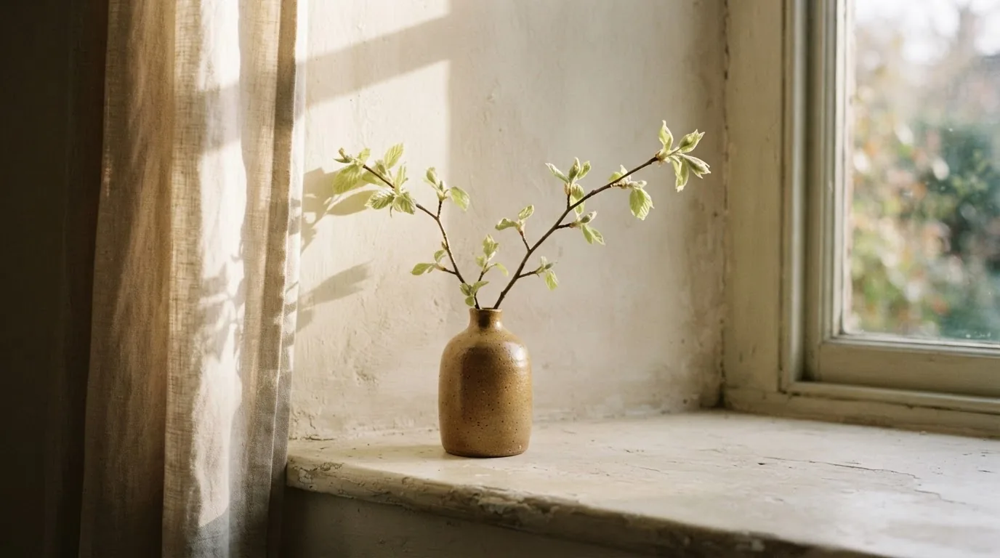
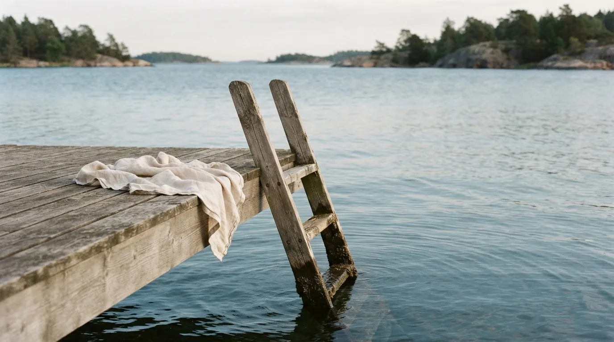
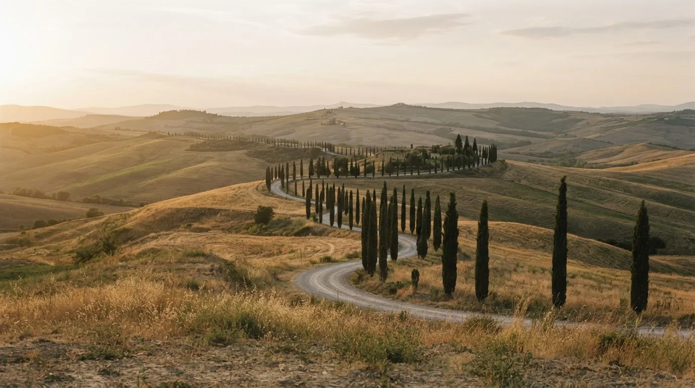

The journal
All journal entries
Notes along the way.

On learning to look again
A familiar walk, a different light. A few thoughts on finding newness in the places we think we know.

A few days by the sea
Salt in the air, nowhere to rush. Fragments from a late-summer escape to the Danish coast.

A personal visual essay
Somewhere, slowly.
Ten days without a plan. A notebook, a camera, and the small discoveries that happen when you take the long way home.
Tuscany, Italy — Summer 2025 Wander through the story